第5回 線形回帰の限界
よく作れたはずのモデルが現場で外れる——なぜ？
場面：「検証では完璧だったのに」
交差検証で良い成績を出したモデルを現場に出しました。ところが大きく外れます。
直線が悪いのではありません。 見たことのない範囲へ延ばしたのが問題です。
今回の問い
クロスバリデーションで良いモデルを選んだのに、現場に出すと外れる。
- 外挿：訓練データの範囲外への予測
- 分布のずれ：訓練とテストが別の集団
- 多重共線性：説明変数どうしの強い相関
線形回帰が失敗するのはどんなときか——今回はその「限界」を体系的に学ぶ。
データの四角形：似た列と、外の行
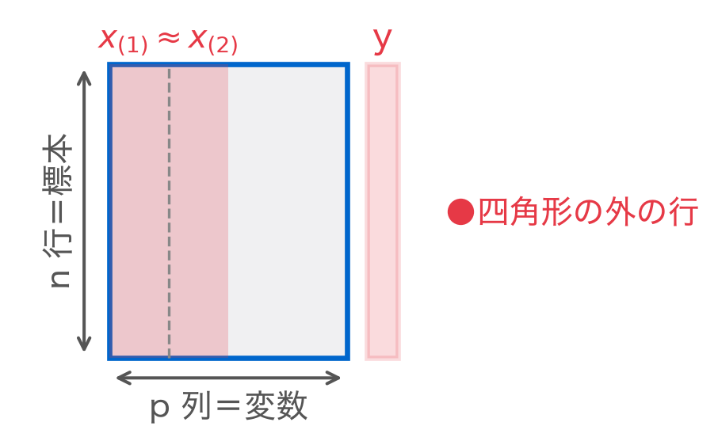
今回の主役は2つ。ほぼ同じ2列（多重共線性）と、四角形の範囲の外にある行（外挿・分布のずれ）。
動機：なぜCVは現場の失敗を防げないか
- 訓練：夏のデータ → 運用：冬のデータ（分布が違う）
- 訓練：20〜35℃ の範囲 → 予測：−5〜10℃（範囲外）
モデルは「知らないこと」について黙ることができない。 範囲外でも、自信満々に何らかの数値を返してしまう。
具体化①：外挿で予測が崩れる
訓練データの範囲外では、予測をまったく信頼できない。
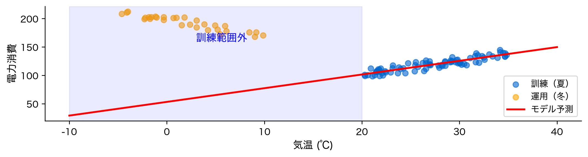
外挿の数字を確かめる
訓練範囲内と範囲外で、誤差は桁違いに変わる。
訓練範囲内（夏）の RMSE = 4.9
範囲外（冬）の RMSE = 136.1
範囲外の誤差は範囲内の約 28 倍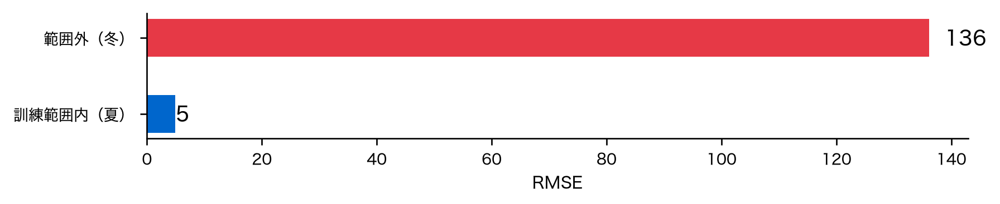
モデルが悪いのではなく、範囲外を尋ねること自体が誤り。
具体化②：分布のずれ（共変量シフト）
説明変数の分布が訓練と運用でずれると、たとえ式が同じでも精度が落ちる。
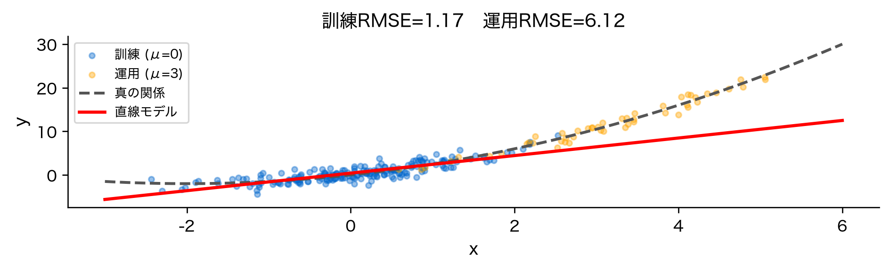
共変量シフトと外挿の違い
真の関係は両方で同じ——なのに運用RMSEが大きく悪化する。
訓練 RMSE = 1.17
運用 RMSE = 6.12 （約 5.2 倍）- 外挿：予測点が訓練データの「外側」にある
- 共変量シフト：説明変数の分布の中心が訓練と運用でずれる
訓練が密な領域で直線の当てはめがズレると、その誤差が薄い領域で拡大する。 実務例：モデルを作った時期と使う時期で、ユーザー属性が変わった。
素朴な限界①：CVスコアは良くても安心できない
CV が測るのは同じ分布のなかでの汎化。範囲外と分布のずれは見ていない。
素朴な限界②：係数の解釈が壊れる
「どの変数が効くか」を係数で語りたい——だが共線性があると係数は暴れる。
- 予測精度は意外と落ちないことがある
- しかし係数の符号・大きさが不安定になり、解釈ができない
- 「テレビ広告の効果は係数2.9」と言っても、データが少し変われば変わる
予測が当たることと、係数が信頼できることは別問題。
位置づけ：第4回からの流れ
- 第4回：CVで公正にモデルを選び、残差で当てはまりを診断した
- 第5回（今回）：その線形回帰が通用しなくなる条件を体系化する
- 第6回（次回）：限界の一部（共線性・過学習）に正則化で対処する
今回は「敵を知る」回。診断の指標（VIF）と直感（外挿・シフト）を手に入れる。
行列で見る：列がほぼ平行だと壊れる
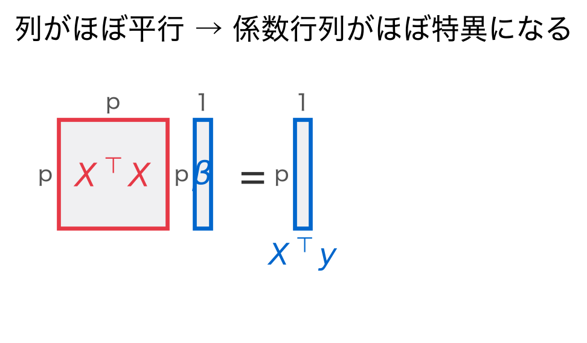
列 \mathbf{x}_{(1)}\approx\mathbf{x}_{(2)} のとき \mathbf{X}^\top\mathbf{X} の逆行列が不安定 → 係数が暴れる。このあとの VIF はその度合いの指標。
定義①：多重共線性とは
多重共線性：説明変数どうしに強い線形相関がある状態。
x_2 \approx a\,x_1 + b \quad\text{のような関係が成り立つ}
- 「収入」と「資産」のように似た情報の変数を入れると起きる
- 完全な共線性なら X^\top X が逆行列を持たない
- 「ほぼ共線」でも解は不安定になる
定義②：VIF（分散拡大係数）
共線性の強さを変数ごとに測る指標が VIF。
\text{VIF}_j = \frac{1}{1 - R^2_j}
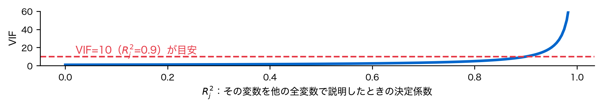
| R^2_j | 0 | 0.5 | 0.9 | 0.95 | 0.99 |
|---|---|---|---|---|---|
| VIF | 1 | 2 | 10 | 20 | 100 |
定義③：VIFは「係数の分散の倍率」
\operatorname{Var}(\hat\beta_j) = \frac{\sigma^2}{(n-1)\,s_j^2}\cdot\frac{1}{1-R^2_j} = (\text{共線性なしの分散})\times \text{VIF}_j
なぜ VIF > 10 が目安か
\text{VIF}=10 は R^2_j=0.9、すなわち「ある変数が他の変数で90%説明できる」状態。 標準誤差は \sqrt{10}\approx 3.2 倍になる。VIF=20（R^2_j=0.95）ならさらに膨らむ。 「10」は慣習的な目安で、厳しめに VIF>5 を警戒する流儀もある。
導出①：共線性で分散が膨らむ仕組み

予測（合計）は安定でも、内訳が定まらない。
導出②：幾何で見る共線性
ほぼ平行な2ベクトルへの分解は、わずかな揺れで係数が大きく変わる。
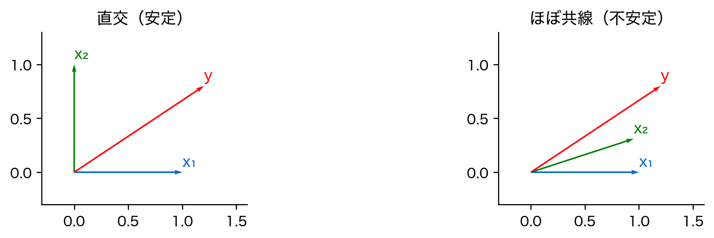
左は x_1,x_2 が直交して分解が一意。右はほぼ重なり、分解が一意に決まりにくい。
手順：VIFの計算アルゴリズム
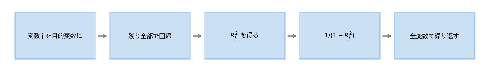
statsmodels の variance_inflation_factor が1関数で実行する。
Pythonデモ①：共線データを作る
x_2 \approx x_1（相関 ≈ 0.99）の状況を人工的に作る。
x1 と x2 の相関 = 0.994真の関係は y = 3x_1 + 2x_2 + \text{誤差}。x3 は y に効かない。
Pythonデモ②：VIFを算出する
変数 VIF
x1 89.719549
x2 89.547588
x3 1.019451x1・x2 は桁違い。x3 は約1.0——共線性の場所が特定できる。
Pythonデモ③：変数を足すと係数が暴れる
x1 のみ : β1 = 4.83
x1 + x2 を投入 : β1 = 2.94, β2 = 1.89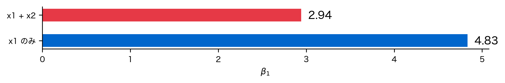
同じデータ・同じ x1 なのに、隣の変数で係数が大きく変わる。
Pythonデモ④：ブートストラップで係数分布
データを少し変える（再標本化）と、係数がどれだけブレるか。
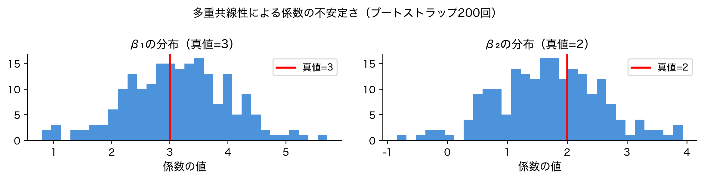
β1 の標準偏差 = 0.88 （範囲 0.8〜5.7）
β2 の標準偏差 = 0.87解釈①：共線なしと比べる
無相関な2変数で同じことをすると、係数のブレは桁違いに小さい。
共線あり β1 の標準偏差 = 0.88
共線なし β1 の標準偏差 = 0.11
ブレの比 = 約 8 倍共線性があると、係数の標準偏差が約8倍に膨らむ——VIFが警告していた通り。
解釈②：実データでVIFを見る（カリフォルニア住宅）
変数 VIF
Latitude 9.297624
Longitude 8.962263
AveRooms 8.342786
AveBedrms 6.994995
MedInc 2.501295
HouseAge 1.241254
Population 1.138125
AveOccup 1.008324緯度と経度は地理的に連動し（相関 −0.92）、情報が重なっています。
解釈③：VIFの読み方
VIF表は「どの変数の係数を信じてよいか」の地図になる。
収入（VIF≈2.5）や占有率の係数は比較的信頼できます。
落とし穴①：外挿と非線形の見落とし
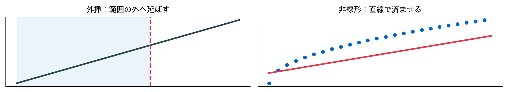
「数字が返ってきた」ことを、当たっている証拠と勘違いしない。
落とし穴②：欠落変数バイアス
重要な変数を入れ忘れると、残った係数が真値からずれる。
z を入れた完全モデル : x の係数 = 2.06 （真値=2）
z を落としたモデル : x の係数 = 4.31 ← 過大評価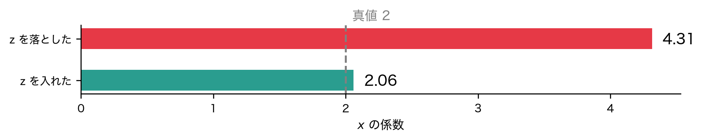
x が z の効果まで肩代わりします。共線性とは逆に、入れ忘れが危ない。
落とし穴③：係数解釈の過信
- 他の変数を固定したときの効果（実際には固定できないことが多い）
- スケールが違えば係数の大小は比較できない（標準化が必要）
- 共線性があれば係数は不安定（VIFで確認）
- 相関は因果ではない——係数が大きくても「効く」とは限らない
「係数が大きいから重要」は、最も危険な早合点。
発展①：正則化で共線性に対処（第6回）
\hat\beta_{\text{Ridge}} = \arg\min_\beta \|y - X\beta\|^2 + \lambda\|\beta\|^2
- 解は (X^\top X + \lambda I)^{-1}X^\top y——\lambda I が逆行列を安定化する
- 共線性で X^\top X がほぼ特異でも、\lambda I を足せば解ける
詳しくは次回。今回の「係数が暴れる」問題への直接の処方箋になる。
発展②：非線形モデルへの動機
- 多項式回帰：曲がりを項として明示（第4回で体験済み）
- 決定木・勾配ブースティング：区分的に複雑な関係を表現
- ただし非線形にしても外挿の危険は消えない——範囲外は依然として未知
「線形の限界」を知ることが、次の手法を選ぶ判断力になる。
できること・できないこと
| 問題 | 検出方法 | 対処法 |
|---|---|---|
| 外挿 | 説明変数の範囲確認 | 範囲内でのみ使う |
| 共変量シフト | 分布の比較 | 再学習 |
| 多重共線性 | VIF | 変数削除・正則化 |
| 欠落変数 | ドメイン知識・残差 | 変数を追加する |
線形回帰が「使える条件」を知ることが、正しい使い方の第一歩。
まとめ（3点）
- 外挿・共変量シフトはCVでは検出できない——適用範囲を事前に確認する
- 多重共線性は予測でなく解釈を壊す——VIF（1/(1-R^2_j)）で診断する
- 係数を「効果」と読むのは慎重に——欠落変数・スケール・因果に注意
CVのスコアが良くても、現場で外れる理由がこれで説明できる。
次回：多重共線性と過学習への対処——正則化（Ridge・Lasso）
今回の「係数が暴れる」問題に、ペナルティ項で正面から対処する。